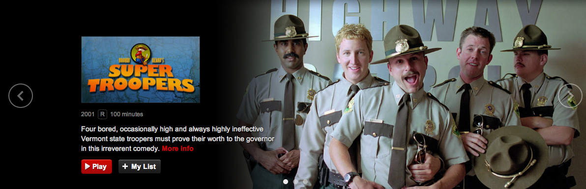
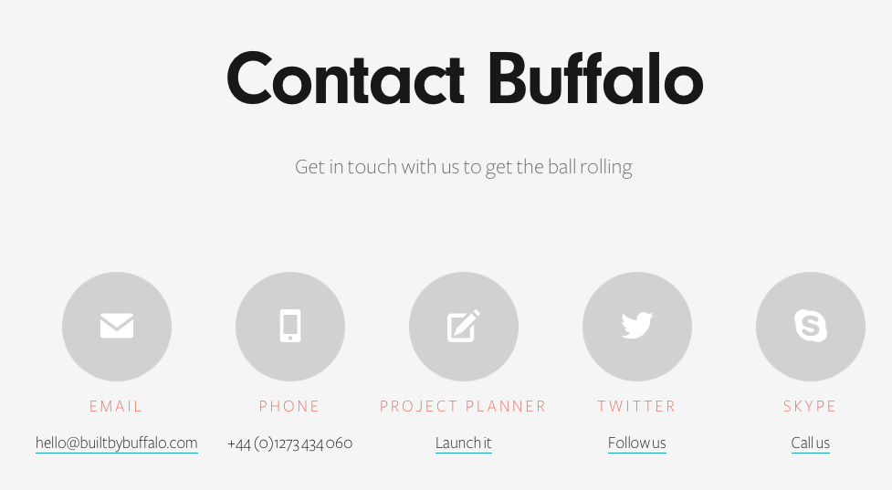

Travis Knoll
Header
www.warbyparker.com

Target Audience
The target audience of the Warby Parker design is to cater to a younger hip crowd. This being said they bring a more youthful feeling to an older crowd as well.
Client goal
The goal is to purchase a unique pair of glasses at a great price that also has online service and design opportunites.
Critique
Overall the branding and simplistic design of the company offers a simple and easy/carefree feel to the site that can be inviting.
Call to Action
www.amazon.com

Target Audience
For this particular reason the call to action is for the purchase of a book. The audience is geared to people that are tech savy that read on their smart phones or kindle devices.
Client goal
The goal is to make a quick purchase on their smart device and then easily read.
Critique
I this this is a great call to action because it offers the quick buy of something instead of putting in the cart and coming back to later. This purchase works very well.
Features
www.netflix.com

Target Audience
Tech savy movie goers that like the online stream or on demand market. Offers a better deal at cost.
Client goal
The main object for the streaming audience is to watch a tv show or movie without commercials at a great price. A lot of people can search for older movies that they love to rewatch or binge watch a tv series.
Critique
I personally think that the features section of this particular site is a bit large. I think it could be almost half the size and cater to the newer shows or movies on hand.
Blog
www.fourhourworkweek.com/blog/

Target Audience
Entrepreneurs and tech savy people that love to learn.
Client goal
The main goal of the blog is to offer information on how to doing something or as he says life hack something. He offers free things all the time and currently started to sell items because of his growing audience.
Critique
I think the blog is very well put together and is easy to find information that your looking for.
Contact
www.builtbybuffalo.com/contact

Target Audience
Client goal
The main goal is to find out business information. This is approached easily is a couple of different fashions.
Critique
I chose this because it works well as something new and it also offers the opportunity to contact a company in many different fashions. I think one thing I would change it to have perhaps pictures of the the employees at the site.
Login/Registration
www.convore.com/signup

Target Audience
Computer programmers and developers that work in teams to make life a little easier.
Client goal
To be able to share files easily accross different platforms.
Critique
I like the site for because it offers information upon registration. I think that is a good idea to make the user more informed. It could use more color in the background however.
Footer
www.ebay.com

Target Audience
Ebay is billed as the worlds largest platform to buy and sell things. It is geared to working class that want to buy good items at a great price. On the seller end it works for entrepreneurs that want to have their own store.
Client goal
The site is great as it is a three part site for buyer seller and the site itself. It works in this manner well because everyone gets what they want.
Critique
I like the footer because it offer everything that the site is about and information to contact or move forward at the bottom. So sites offer what is left at the bottom and think it's nice to have the information there.
Home
www.exmachina-movie.com
Target Audience
Ex-Machina is an A.I. movie that is target to the tech world and scifi genres. This site bleeds both of these worlds nicely into one.
Client goal
To find out information or buy a ticket for the site.
Critique
I think the site is amazing not only how it functions but how it interacts with the audience right from the home screen. It allows the user to feel like they are apart of the experience.